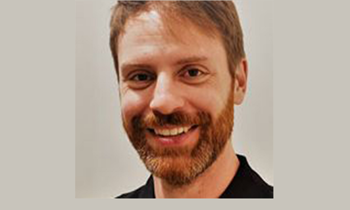
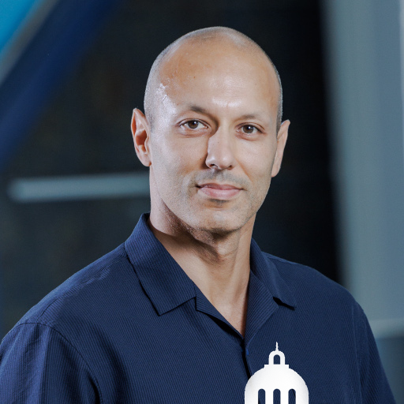

Program
Pers3S workshop spans a full day from 9am to 18h00, with a total of 4 sessions offering the opportunity to meet students, early career researchers, more experiences one and industrial stakeholders.
9h-10h30 Session 1
9h00 Amphithéâtre Gustave Roussy, Couvent des Cordeliers
Rethinking the I/O Stack: Fast I/O Completion and User-Space Caching
Yu Liang, INRIA
Fast storage exposes software overhead as a key bottleneck in both direct and buffered I/O. This talk presents UnICom (FAST 2026), which enables efficient direct I/O completion under mixed compute- and I/O-intensive workloads. It then draws on our HotStorage 2026 study to show why small buffered requests are particularly sensitive to software overhead, and to examine the challenges of bringing kernel page-cache benefits to user space.
9h30 Amphithéâtre Gustave Roussy, Couvent des Cordeliers
Carbon Footprint of Storage in Data Centers: the Impact of Using SSDs for Key-Value Stores
Thomas Ropars, INRIA
This presentation analyzes the lifecycle carbon footprint of SSDs versus HDDs for Key-Value stores to determine if SSDs' superior performance offsets their higher manufacturing and energy costs. By measuring hardware power consumption across various workloads, results show that SSDs typically achieve a lower overall carbon footprint due to their high operational energy efficiency. However, HDD-based systems remain the greener choice when SSD capabilities are underutilized or when the data center operates on low-carbon electricity.
10h00 Amphithéâtre Gustave Roussy, Couvent des Cordeliers
PaCaR: Improved Buffered I/O Locality on NUMA Systems with Page Cache Replication
Julien Sopena, LIP6
Multi-socket NUMA systems struggle with high memory access latencies, particularly in highly parallel, I/O-intensive applications where traditional migration techniques fail. To solve this, we introduce PaCaR, a transparent page cache replication mechanism that duplicates cached pages across nodes while ensuring write consistency and adapting to memory pressure without requiring application changes. Evaluations on a dual-socket server show PaCaR boosts performance by up to 1.4x in synthetic workloads and 25% in real-world applications. This paper received the Best Paper Award during EuroSys 2026

10h30
** 30 minute break **
11h-12h00 Distinguished Young Researchers
11h00 Amphithéatre Gustave Roussy, Couvent des Cordeliers
THEIA: Scalable and Effective Data Prefetching for Geo-Distributed Erasure-Coded Storage
Marc Tranzer, INRIA
Geo-distributed erasure-coded storage systems suffer from severe WAN latency bottlenecks during read operations, a challenge traditional prefetching methods fail to address. This presentation introduces THEIA, a scalable data prefetching framework that intelligently predicts and proactively retrieves data chunks across data centers. By effectively masking network latency and optimizing cross-datacenter bandwidth, THEIA significantly accelerates read performance for globally distributed applications while maintaining high storage efficiency.
11h20 Amphithéâtre Gustave Roussy, Couvent des Cordeliers
Impact of interference from concurrent jobs on checkpointing performance
Méline Trochon, INRIA / DDN
I/O has been identified as one of the main bottlenecks in HPC. Among the most I/O-intensive operations is checkpointing, which is necessary to save the state of an application and allow it to be restarted at an advanced stage of computation. However, near the parallel file system, concurrency prevents checkpoint phases from reaching the best I/O performance. In this paper, we study I/O interference in this specific context: we look at performance of a checkpoint phase when faced with different interference patterns, exploring aspects such as scale, number of processes, operation, number of files, etc. Through an extensive experimentation, in two systems, we show the impact of these aspects on checkpoint. Moreover, we show that some configurations --- e.g., an application that does random accesses --- lead to degraded system I/O performance.
11h40 Amphithéâtre Gustave Roussy, Couvent des Cordeliers
VoliStorM: A Crash-Consistent I/O Cache with Two Kernels Instead of Two Caches
Jana Toljaga, Telecom SudParis
A crash-consistent I/O cache is essential to ensure data integrity while optimizing performance. However, a general-purpose kernel fails to ensure integrity efficiently because of the high cost of synchronizing I/O requests with the many subsystems that rely on the cache. As a consequence, applications bypass the kernel I/O cache to implement a second cache in user space, which introduces overheads and high engineering cost. We address these drawbacks by doubling the number of kernels instead of doubling the number of caches. The first kernel is general-purpose, while the second provides an independent I/O stack tailored to efficiently ensure integrity. We implemented this design in VoliStorM using hardware virtualization. Our evaluation shows that, across databases, in-memory cache checkpointing, and language runtimes, VoliStorM outperforms the dual-cache approach while simplifying application code and improving code reuse.
12h-12h40 Flash presentations poster introduction

12h00 Amphitéatre Gustave Roussy, Couvent des Cordeliers
RAPID: Regime-Adaptive Detection of Persistent I/O Bursts in HPC Systems
Hocine Mahni, Lab-STICC ENSTA - UBO
High-performance computing (HPC) applications generate highly variable I/O workloads, with periods of intense activity that may increase contention on shared storage systems. Detecting these bursts is challenging because bandwidth levels and temporal patterns change across applications and execution phases. Consequently, a single statistical threshold may miss bursts or classify normal fluctuations as bursts. We present RAPID, an adaptive method for detecting persistent I/O bursts using only past observations, without prior model training or workload-specific calibration. RAPID selects between a robust threshold based on the median and interquartile range and a threshold based on the mean and standard deviation, according to recent workload sparsity and periodicity. A temporal persistence criterion filters isolated peaks. We evaluate RAPID on 2,400 injected bursts across four controlled workload regimes: stationary, non-stationary, periodic, and sparse. We compare it with four reference methods: a global 95th-percentile threshold (P95), a rolling median-and-median-absolute-deviation (MAD) threshold, a rolling mean-plus-three-standard-deviations threshold, and a mean-plus-k-standard-deviations threshold calibrated on independent burst-free data. Additional experiments vary burst amplitude and duration, while Darshan traces illustrate applicability to real HPC workloads. RAPID achieves a higher overall event-level F1 score than these reference methods. Relative to the rolling mean-plus-three-standard-deviations method, improvements range from approximately 2% to 26% across the evaluated experimental settings. These results indicate that adapting detection thresholds to the local statistical characteristics of I/O workloads can improve burst identification. RAPID could inform future I/O-aware scheduling and storage-management decisions; its runtime overhead and operational benefits remain to be evaluated.

12h05 Amphitéatre Gustave Roussy, Couvent des Cordeliers
DeltaLLM: Adapting LLMs for Memory-driven Edge workloads via Layer-wise Precision
Meriem Bouzouad, Lab-STICC / ENSTA – National Taiwan University
Recently, pushing LLM deployment to edge devices for privacy and latency concerns has gained significant momentum. However, edge LLMs operate alongside multiple applications and must dynamically adapt to constrained and variable memory availability. When memory pressure is high, LLM models may be swapped out or, in the worst cases, the process may be killed by the operating system, which is dramatic for latency and service continuity. Switching to a smaller model avoids this, but full reload is slow and hurts cold-start latency. It’s also suboptimal when memory later allows the loading of larger, more accurate model. This paper presents DeltaLLM, a framework that makes it possible to switch between models of different sizes by only loading/unloading the changing layers. By leveraging layer-wise quantization, our system automatically selects the best model quantization that can fit within the available memory, maximizing accuracy and reducing I/O overhead. In addition, Our solution predicts the opportune moment to trigger the switching, thereby avoiding disruption of service continuity. Results show that our strategy reduces I/O time by up to 60% as compared to current strategies, while ensuring a much better utilization of the memory budget. It also better hides the model switching latency thanks to an opportunistic method.
12h10 Amphitéatre Gustave Roussy, Couvent des Cordeliers
Towards Native Vector Search in Temporal Graph Databases for Network Digital Twins
Oussama Zaid, Orange Research / IRISA
Network digital twins represent telecom infrastructure as a large property graph that evolves continuously. Alongside the graph, entities are increasingly described by vector embeddings produced by machine learning models, for example to characterize their behavior. Many analyses need both: find the entities most similar to a given profile, but only within a given part of the network, and possibly as the network was at some point in the past. Today, this requires combining a graph database with a separate vector store. Vectors are copied outside the graph, the vector index only reflects the current state, and the two systems are queried independently, with no shared optimization. This PhD work, conducted within Orange's Thing'in digital twin platform, aims to bring vector search natively into a temporal graph database, so that graph, vectors and their history are stored and queried by a single system. It first addresses storage: how to keep vectors and their similarity indexes inside a temporal graph database so that past states remain queryable, without rebuilding indexes from scratch and with controlled storage overhead. It then addresses query processing: how to execute queries that combine graph traversal and similarity search efficiently, by letting the graph query engine take both into account rather than treating vector search as an external call. The poster will present the motivation from Orange's network digital twin use cases, the positioning with respect to existing graph and vector systems, the current state of a prototype built on Clock-G, a temporal graph management system, and the open problems we are exploring.
12h15 Amphitéatre Gustave Roussy, Couvent des Cordeliers
Réduction des coûts de reconstruction dans les systèmes de stockage distribué par hybridation de codes d'effacement
Elyas El Idrissi, Université de Picardie Jules Verne / Ugloo
Les codes de Reed–Solomon sont largement utilisés pour assurer la durabilité des données dans les systèmes de stockage distribué, mais la réparation d'un seul fragment perdu exige de lire un volume équivalent à l'ensemble des données utiles de la bande, ce qui pèse fortement sur le réseau et les disques à grande échelle. Le code Hitchhiker, de la famille des codes à piggybacking, réduit efficacement ce coût sans redondance supplémentaire, mais seulement pour les fragments de données. Les codes à récupération locale (LRC) peuvent réduire le coût de réparation de n'importe quel ensemble de fragments, moyennant un surcoût de stockage d'autant plus élevé que les groupes locaux sont petits. Nous proposons HH-LRC, un schéma hybride qui applique la localité aux seules parités globales d'un code Hitchhiker. Les fragments de données sont réparés par piggybacking et les parités globales au sein de petits groupes locaux, ce qui demande, à taille de groupe égale, moins de parités locales qu'un LRC couvrant tous les fragments, et préserve la tolérance aux pannes du code MDS sous-jacent. Une simulation exhaustive des combinaisons de pertes, menée sous les contraintes d'un système de stockage industriel, montre que, pour un surcoût de stockage de 4 à 11 %, HH-LRC réduit la quantité lue par rapport à Reed–Solomon de 43 à 60 % pour une perte et jusqu'à 32 % pour deux pertes. En moyenne, HH-LRC lit ainsi moins que les deux codes hybridés dans toutes les configurations simulées. Une comparaison avec le code MSR Clay confirme par ailleurs que la quantité lue ne suffit pas à comparer des codes : dans les configurations considérées, Clay lit jusqu'à 85 % de moins que Reed–Solomon, mais ses nombreuses sous-bandes multiplient par 45 à 228 les opérations de lecture pour une perte et imposent des fragments d'au moins 11 Mo, contre 32 ko pour HH-LRC. Enfin, une implémentation en C++, qui expose un plan de lecture minimal, indique que la réduction de la quantité lue se traduit aussi par un temps de décodage significativement inférieur à celui de Reed–Solomon.
12h20 Amphitéatre Gustave Roussy, Couvent des Cordeliers
détection et l'atténuation des dégradations de performance des SSD liées à l'amplification d'écriture
Lina SADI et Islam Chakib KEDADSA, Lab-STICC / ENSTA
Under write-intensive workloads, conventional SSDs undergo performance degradation caused by write amplification (WA). Because the underlying mechanisms are managed opaquely within the SSD controller, mitigating these degradation phases from the host side remains a challenge. Existing approaches mainly try to reduce WA by changing SSD-internal mechanisms, modifying the host software stack, or relying on emerging host-device interfaces, which limits their applicability to commodity SSDs. In this paper, we propose WARM, a reactive host-side adaptive I/O throttling mechanism that mitigates WA effects by dynamically limiting the write bandwidth of processes at runtime. The goal is to give the SSD enough slack to complete internal maintenance and recover nominal throughput as fast as possible. Since SSDs do not always expose reliable device-level indicators for identifying these degradation phases, WARM includes a lightweight online diagnosis component based on Linux kernel-level I/O tracing and offline performance modeling. This component detects deviations from nominal SSD behavior and triggers throttling during degradation phases. Experiments under write-intensive workloads show that WARM reduces total workload execution time by up to 25,14% compared with an unregulated baseline.
12h25 Amphitéatre Gustave Roussy, Couvent des Cordeliers
Mosaic: Automatic Categorization of I/O Patterns from Scientific Application
Théo Jolivel, INRIA Kerdata
While newly deployed High-Performance Computing (HPC) systems embeds more compute capabilities than the generations before, parallel file systems (PFS) are struggling to keep up with this same trend, increasing the gap between computing power and I/O performance. If new paradigms and technologies are implemented to provide faster storage accesses, like tier-based systems and local storage buffers, it is essential to understand how the I/O behavior of applications to take advantage of these resources. Such knowledge facilitates the design of efficient I/O optimizations, and enables to better understand the loads experienced by the PFS. In this context, we developed Mosaic, a Python library that processes I/O traces collected at machine scale and classify them based on I/O patterns. Mosaic extracts patterns through three pillars: I/O temporality, I/O periodicity, and metadata requests. This allows a high-level understanding of how and when applications need to access data and the evolution of those patterns across time and machines. We validate Mosaic on datasets from two top-tier supercomputers, unveiling a clear correlation between large data writes and periodicity. We also explore pattern variations across multiple runs of the same application or launched by the same user.
Bio: Théo Jolivel is a PhD student at Inria Rennes in the KerData team. His research topic is on the detection and categorization of storage access patterns of HPC applications and their prediction at runtime to automatically enable targeted I/O optimizations based on the specific patterns of each program.
12h30 Amphitéatre Gustave Roussy, Couvent des Cordeliers
Application-aware I/O scheduling in HPC systems
Serge Meurrens, INRIA Bordeaux
With the increasing scale of HPC applications and emerging data-intensive workloads, the parallel file system (PFS) has become a critical bottleneck. When multiple applications access the PFS concurrently, they experience interference that degrades performance in ways that are not uniform: some applications harm others more because of their access patterns. Despite this being well documented, studies consistently show that most HPC applications use sub-optimal access patterns. Rather than forcing users to adapt, this thesis proposes that the I/O infrastructure should adapt to applications transparently, through intelligent scheduling. We have currently identified 10 common access patterns of HPC applications by analyzing publicly available Darshan trace datasets from the production supercomputer Polaris. For that matter, we have used Summario —an I/O summarization tool to estimate and characterize applications’ access patterns from Darshan traces—which has been extended to leverage PyDarshan to directly parse Darshan traces, extract aggregated counters and characteristics. We have obtained the distributions of the associated parameters and their correlations. By extending our analysis, we expect to construct a taxonomy of common I/O access patterns in HPC. Once the main access patterns are identified, we evaluate how they interfere with each other when sharing the PFS concurrently. We are conducting controlled experiments on multiple platforms to measure the impact of different pattern combinations on I/O bandwidth. We use the IOPS benchmark orchestration framework to manage the experimental campaigns efficiently, with Bayesian optimization to explore the parameter space intelligently rather than exhaustively. The expected outcome is an empirically grounded characterization of which pattern combinations cause severe interference and which coexist efficiently. Using the newly acquired knowledge, we will design I/O scheduling strategies that consider application characteristics when making decisions. We will extend IO-SETS to handle the full diversity of temporal patterns identified beyond periodic applications and make it adaptive, updating scheduling decisions as pattern estimates are refined during execution.

12h35 Amphitéatre Gustave Roussy, Couvent des Cordeliers
Assessing tape storage performance
Louis Delyon, Télécom SudParis
One could argue that magnetic tapes are a technology of the past, largely bested by newer storage technologies like HDDs and NVMEs. However, they are still widely used to store petabytes of data as they offer a very good ratio price/TB. The main drawback, the recall time of data on tapes (tens of seconds) remains a strong operational constraint to integrate tape storage in the storage hierarchy for warm to cold data. Moreover, few efforts have been dedicated to measure the performance of tape libraries at fine grain in order to optimize its operational cost. The general idea of the VHS project is to propose new interactions between resource management and tape systems. Using filesystem on tapes, we plan to design novel data placement strategies that will propose efficient data accesses by considering tapes at the level of the storage hierarchy by optimizing its operational cost.
12h40
** 90 minute lunch break **
14h00-15h30 Session 2

14h00 Amphithéâtre Gustave Roussy, Couvent des Cordeliers
NIOVA Distributed Block Storage Architecture
Bernd Schubert, NIOVA
Developing intelligent infrastructure software, high-performance storage systems, and cloud-native solutions for next-generation data centers and accelerated computing

14h30 Amphithéâtre Gustave Roussy, Couvent des Cordeliers
VAST Data: From IOPS to Action
Sven Breuner, VAST Data
Gigantic IOPS numbers are not worth much if the storage system from which they come is not really increasing productivity of the users by modern standards. The convergence of High-Performance Computing (HPC) and Artificial Intelligence (AI) demands storage architectures capable not only of massive throughput, but to overall end-to-end acceleration. Taking into account the complexity of the workflows, acceleration occurs both at the data plane and control plane level. This presentation will address the journey toward time-to-result for real modern scientific workflows"
15h00 Amphitéatre Gustave Roussy, Couvent des Cordeliers
Storage at Bull: The Alice Recoque Experience
Maxence Joulin, BULL
The Alice Recoque Exascale supercomputer bridges HPC and AI workloads through a unified, multi-tiered storage architecture. By combining a distributed all-flash NVMe performance tier with high-capacity object storage, the system eliminates I/O bottlenecks and guarantees deterministic latency at exabyte scale. Advanced data orchestration seamlessly manages complex data lifecycles, delivering the sustained bandwidth and data mobility required to drive true exascale discovery.
15h30
** 30 minute break **
16h00-18h00 Session 3

16h00 Amphitéatre Gustave Roussy, Couvent des Cordeliers
TOTO: Transparent I/O Tuning for HPC Applications
Francieli Boito, INRIA
High-performance computing applications rely on parallel file systems, and their I/O performance is strongly affected by configuration parameters such as stripe count. However, the ideal stripe count is highly application- and system-dependent, making it difficult to predict and rarely tuned in practice. As a result, substantial I/O performance potential remains unexplored. We present TOTO, a transparent tool that improves I/O performance without requiring application modifications. TOTO intercepts POSIX calls, characterizes application behavior, and uses a machine learning model to select an appropriate stripe count, even for already opened files. We also introduce an allocation algorithm that balances performance and resource occupation, and describe a methodology for training the model once per system using limited data. Our results show that TOTO can improve I/O performance by up to 4.6 times compared to using a default stripe count, while imposing an overhead of at most 9%. Moreover, compared to the state of the art, TOTO can optimize more applications with a lower resource occupation, which is expected to decrease contention in the I/O infrastructure.

16h30 Amphithéatre Gustave Roussy, Couvent des Cordeliers
I/O-Cool: Using I/Os for Temperature Regulation When Training on the Edge
Jalil Boukhobza, LIP6
This paper is motivated by the observation that edge data intensive applications, in particular AI training, alternate between I/O and compute phases. Notably, we found that processor temperatures consistently decrease during the I/O phases, revealing opportunities to optimize thermal behavior. We propose I/O-Cool, a proactive thermal management strategy for I/O–compute alternating edge workloads that leverages I/Os to maximize cooling opportunities while reducing the need for processor frequency reductions during the compute process
17h00 Amphitéatre Gustave Roussy, Couvent des Cordeliers
Support of LTFS in MHVTL
Quentin Loriaux, CEA
This talk addresses the growing need for open-source Virtual Tape Libraries (VTLs) to support the design and validation of storage systems based on tape technology. Tape storage has become increasingly attractive due to its low cost, low energy consumption, and the ability to provide offline data protection when tapes are unloaded from drives. However, developing and testing tape-based workflows is difficult when physical tape hardware is not available, especially because of the high-latency I/O operations typical of tape drives. VTLs are therefore essential for testing use cases and software in a reproducible environment without depending on physical tape devices. In this work, we extend mhvtl, an open-source VTL, with partition support, providing a practical way to emulate LTFS (Linear Tape File System) volume layouts and improve the testing of tape file systems and data-management software.

17h30 Amphitéatre Gustave Roussy, Couvent des Cordeliers
Closing Session: Reflection on storage from the last 10 years to the next ones!
Shadi Ibrahim, INRIA
Over the past decade, the Performance and Scalability of Storage Systems (Per3S) workshop has served as a critical nexus for academia and industry to address extreme-scale data challenges. This 10-year retrospective examines the profound architectural shifts of the last ten years, including the rise of NVMe, flash-native distributed file systems, and the convergence of HPC and AI storage workloads. By reflecting on key breakthroughs presented throughout past editions, this session contextualizes how the community has successfully navigated the performance-capacity gap. Looking ahead, it outlines the emerging I/O, thermal, and data orchestration challenges that will define the next era of exascale and cloud-native storage infrastructures.
Steering Committee
Since its inception 10 years ago, Per3S is managed by a steering committee, the committee is fluid and tends to evolve from an edition to the other.

François Trahay
Télécom SudParis / Institut Polytechnique de Paris
François Trahay is full professor at Télécom SudParis since 2011. He received his Ph.D. degree in computer science from the University of Bordeaux in 2009. He has been working on runtime systems for high performance computing since 2006. His research interests now mostly focus on performance analysis for HPC and distributed systems. He is the project leader and main developer of the EZTrace framework for performance analysis.
Jalil Boukhobza
Sorbonne Université, LIP6
Jalil Boukhobza is full professor at Sorbonne Université, Lip6 lab. His main research interests include storage system design, performance evaluation and energy optimization, and operating system design. He works on different application domains such as embedded systems, cloud computing, and database systems.
Shadi Ibrahim
Inria - Bretagne
Shadi Ibrahim is a Research Scientist at Inria. He obtained his Ph.D. degree in Computer Science from Huazhong University of Science and Technology (HUST) in Wuhan of China in 2011. His current research interests are in scalable data management, storage systems, data-intensive computing, parallel I/O and distributed file systems, virtualization technology and Cloud/Fog computing. Dr. Ibrahim received in 2020 the IEEE TCSC Award for Excellence in Scalable Computing (Middle Career Researcher), he's a Distinguished member of the ACM and a Senior member of IEEE.
Philippe Deniel
CEA-DAM
Philippe Deniel is heading the Storage Architecture and Systems Lab at CEA/DIF. His lab is in charge of managing the daily data production of both CEA/DIF data centers namely Tera and TGCC. Attentionality to manage daily production, the lab is also developing actively Lustre and HPSS. Philippe is the original developer of NFS-Ganesha an open-source NFS server in user space available in LGPLv3. Philippe is the Technical Coordinator the EuroHPC IO-Sea project.
Philippe Raipin
Orange Labs
Philippe is a Program Manager at Orange Research, leading projects on digital twin platforms. His expertise focuses on the architecture, performance, and scalability of massive data management. He specializes in optimizing storage systems, particularly the modeling and compaction of historical graphs. He applies semantic web standards and vector databases to structure complex network topologies. Through these methods, he actively shapes data standards for next-generation cognitive digital twins.